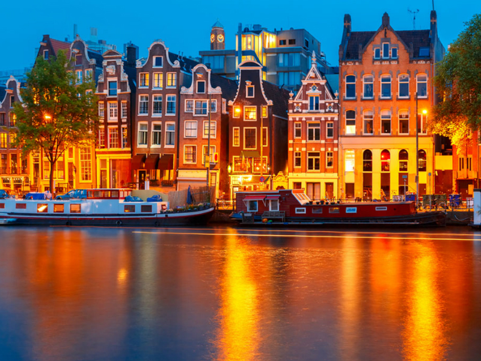
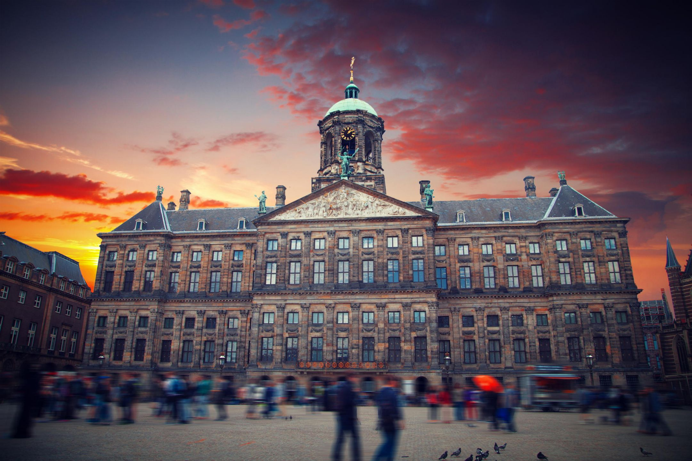

Η Ολλανδία η χώρα που αποκαλείται στα ολλανδικά Nederland και κυριολεκτικά σημαίνει Κάτω Χώρες, επηρεάζεται από το γεγονός ότι περίπου το 1/4 της χώρας βρίσκεται κάτω από τη στάθμη της θάλασσας. Η Ολλανδία έχει μακρά ιστορία όσον αφορά την κοινωνική ανοχή και θεωρείται γενικά ως μια φιλελεύθερη χώρα
Το σπίτι της Άννας Φρανκ είναι ένα βιογραφικό μουσείο που στεγάζεται σε ένα ιστορικό κτίριο του 17ου αιώνα στην συνοικία Jordaan του Άμστερνταμ. Πρόκειται για το σπίτι, όπου έζησε για 25 μήνες η Άννα Φρανκ, συγγραφέας του δημοφιλούς ημερολογίου, συμβόλου του δευτέρου Παγκοσμίου Πολέμου και της ναζιστικής κατοχής, μαζί με την οικογένειά της και άλλους Εβραίους. Το σπίτι χρησιμοποιήθηκε ως καταφύγιο για τις Εβραϊκές οικογένειες, που στοχοποιήθηκαν από το ναζιστικό καθεστώς. Αν και η Άννα Φρανκ έζησε δύο χρόνια στη συγκεκριμένη κατοικία, καθώς η οικογένειά της συνελήφθη και στάλθηκε σε στρατόπεδα συγκέντρωσης. Η Άννα Φρανκ (Annelies Marie (Anne) Frank) έγινε γνωστή από το ημερολόγιό της, που διασώθηκε και εκδόθηκε σε βιβλίο με τίτλο “Το ημερολόγιο μιας νεαρής κοπέλας” ή όπως έμεινε γνωστό το “Το ημερολόγιο της Άννας Φρανκ”. Το σπίτι, είναι από τα δημοφιλή αξιοθέατα του Άμστερνταμ με εκατομμύρια επισκέπτες ετησίως, οι οποίοι μπορούν να πάρουν μια γεύση από τα ίχνη της ζωής και της καθημερινότητας των πρώην κατοίκων του, που είναι ακόμη φανερά. Το αυθεντικό ημερολόγιο της Άννας Φρανκ αποτελεί, φυσικά, το σημαντικότερο έκθεμα του μουσείου. Στην ξενάγηση του σπιτιού, ο επισκέπτης έχει, επίσης, την ευκαιρία, να περιηγηθεί σε σημαντικούς χώρους και δωμάτια, όπως την αποθήκη όπου ο πατέρας της Άννας, Ότο Φρανκ, έφτιαχνε πηκτίνη για μαρμελάδα και μπαχαρικά, την κινητή βιβλιοθήκη που λειτούργησε ως είσοδος του κρυμμένου καταφυγίου, το γεμάτο αφίσες εφηβικό δωμάτιο της συγγραφέα. Σε έναν τοίχο υπάρχουν, μάλιστα, σημάδια από το μέτρημα του ύψους δύο κοριτσιών.

Το Ρέικσμουζεουμ (Εθνικό Μουσείο) είναι το διασημότερο μουσείο της Ολλανδίας. Ιδρύθηκε το 1800 στη Χάγη και μετακόμισε το 1808 στο Άμστερνταμ όπου και αρχικά στεγάζονταν στο Βασιλικό Παλάτι επί της πλατείας Νταμ. Στην τωρινή τοποθεσία που είναι η Πλατεία Μουσείου, στεγάζεται από το 1885 ενώ ο αρχιτέκτονας του Pierre Cuypers είναι ο ίδιος που σχεδίασε και τον επιβλητικό Κεντρικό Σιδηροδρομικό Σταθμό του Άμστερνταμ (Centraal Station). Το Εθνικό Μουσείο της Ολλανδίας φιλοξενεί έργα τέχνης, εκθέματα που προέρχονται από τις αποικίες, και κυρίως αντικείμενα που σχετίζονται την τέχνη της εποχής. Πιο συγκεκριμένα το μουσείο περιλαμβάνει περίπου 8.000 ιστορικά εκθέματα και έργα τέχνης από μια συλλογή που περιλαμβάνει πάνω από 1 εκατομμύριο αντικείμενα που χρονολογούνται από το 1200 έως και το 2000. Μεταξύ των σημαντικότερων εκθεμάτων είναι αναμφίβολα οι πίνακες των σημαντικότερων Ολλανδών καλλιτεχνών (κυρίως της Χρυσής Εποχής της Ολλανδίας κατά των 17ο αιώνα) όπως ο διάσημος πίνακας "The Night Watch" (Η Νυχτερινή Περίπολος) του Ρέμπραντ, αλλά και το φημισμένο έργο "The Milkmaid" (Η Γαλατού) του Γιοχάνες Βερμέερ.
| ΚΟΥΖΙΝΕΣ | Ολλανδική, Μπαρ, Kαφέ, Ευρωπαϊκή, Φαγητό του δρόμου |
|---|---|
| ΕΙΔΙΚΕΣ ΔΙΑΤΡΟΦΕΣ | Κατάλληλο για χορτοφάγους | ΓΕΥΜΑΤΑ | Μεσημεριανό, Δείπνο, Αργά τη νύχτα, Ποτά |
| ΔΥΝΑΤΟΤΗΤΕΣ | Κρατήσεις, Υπαίθρια τραπέζια, Καθίσματα, Διαθέσιμα καρεκλάκια για μωρά, Πρόσβαση σε αναπηρική καρέκλα, Σερβίρει αλκοόλ, Πλήρες μπαρ, Δωρεάν WiFi, Δέχεται πιστωτικές κάρτες, Πάρκινγκ στο δρόμο, Κρασί και μπύρα |

| ΚΟΥΖΙΝΕΣ | Ολλανδική, Ευρωπαϊκή |
|---|---|
| ΕΙΔΙΚΕΣ ΔΙΑΤΡΟΦΕΣ | Κατάλληλο για χορτοφάγους, Επιλογές βίγκαν, Πιάτα χωρίς γλουτένη | ΓΕΥΜΑΤΑ | Μεσημεριανό, Δείπνο, Αργά τη νύχτα |
| ΔΥΝΑΤΟΤΗΤΕΣ | Κρατήσεις, Υπαίθρια τραπέζια, Ιδιωτικό δείπνο, Καθίσματα, Διαθέσιμο πάρκινγκ,Πρόσβαση σε αναπηρική καρέκλα, Σερβίρει αλκοόλ, Δωρεάν WiFi, Δέχεται πιστωτικές κάρτες, Με σερβιτόρους |
Το Park Inn by Radisson Amsterdam City West βρίσκεται στο Άμστερνταμ και προσφέρει εξαιρετικές μονάδες στο πολυλειτουργικό συγκρότημα VEN που στεγάζει διάφορες εγκαταστάσεις που λειτουργούν καθημερινά όλο το 24ωρο, όπως καζίνο. Σε όλους τους χώρους υπάρχει δωρεάν WiFi. Όλα τα δωμάτια διαθέτουν κλιματισμό, τηλεόραση επίπεδης οθόνης και καθιστικό. Περιλαμβάνουν επίσης ιδιωτικό μπάνιο με δωρεάν προϊόντα περιποίησης και στεγνωτήρα μαλλιών. Το Park Inn by Radisson Amsterdam City West έχει 19 αίθουσες συσκέψεων και μεγάλη αίθουσα δεξιώσεων, που μπορεί να φιλοξενήσει 750 άτομα. Προσφέρει επίσης πολλούς χώρους χαλάρωσης. Το κτήριο σχεδιάστηκε από τον διάσημο αρχιτέκτονα Karim Rashid, ο οποίος είναι γνωστός για τη χρήση τολμηρών χρωμάτων. Το πολυλειτουργικό συγκρότημα VEN περιλαμβάνει γυμναστήριο, εστιατόρια, κεντρική πλατεία, καταστήματα, καζίνο και διάφορες επιλογές για φαγητό. Το κατάλυμα λειτουργεί όλο το 24ωρο. Διαθέτει χώρο στάθμευσης με πρόσθετη χρέωση, για τον οποίο δεν χρειάζεται κράτηση. Υπάρχει επίσης υπηρεσία ενοικίασης ποδηλάτων. Το Park Inn by Radisson Amsterdam City απέχει 1,9χλμ. από τον χώρο εκδηλώσεων Studio Westerpark και 3,3χλμ. από το Σπίτι της Άννας Φρανκ. Το πλησιέστερο αεροδρόμιο είναι το Αεροδρόμιο Schiphol, σε ακτίνα 11χλμ. από το κατάλυμα.

Το The Manor Amsterdam συνδυάζει μεγαλειώδεις εξωτερικούς χώρους με μοντέρνους, εσωτερικούς χώρους εμπνευσμένους από την Ιταλία. Το κατάλυμα προσφέρει κοινόχρηστο κήπο με βεράντα, υπηρεσία ενοικίασης ποδηλάτων και δωρεάν WiFi. Η Στάση Wijttenbachstraat του τραμ είναι μπροστά από το ξενοδοχείο, ενώ το ιστορικό κέντρο της πόλης του Άμστερνταμ απέχει μόλις 10 λεπτά με το αυτοκίνητο. Τα φωτεινά δωμάτια του The Manor Amsterdam διαθέτουν μοναδικό κεφαλάρι με φωτογραφίες. Παρέχουν επίσης τηλεόραση επίπεδης οθόνης, δωρεάν WiFi και μπάνιο με δωρεάν προϊόντα περιποίησης. Ορισμένα δωμάτια έχουν ψηλές οροφές. Στο lounge bar μπορείτε να επιλέξετε καφέ κατά τη διάρκεια της ημέρας και κοκτέιλ το βράδυ. Η ταχέως αναπτυσσόμενη περιοχή Oost (Ανατολή) είναι δημοφιλής για τα καταστήματα, τα καφέ και τα εστιατόρια. Μπορείτε να απολαύσετε χαλαρωτικό περίπατο ή να κολυμπήσετε στο Oosterpark, στα 2 μόλις λεπτά με τα πόδια από το The Manor Amsterdam. Η Dappermarkt είναι σε απόσταση 500 μέτρων.